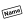

New
After a long press on the map on the main screen you will enter the "New" mode (also see Introduction). This is the main way to add new nodes, ways and OSM Notes in Vespucci. At the place where you touched the screen you will see a cross marker.
You can now do one of three things:
- touch in the same place again - this will add a node at the location and start the tag editor. If the location is within the tolerance zone of a way it will be added as a new node to that way.
- touch some other place on the screen - this will create a way from the initial location to the current location, the way can be extended by adding further nodes. Touching the last location completes the way and starts the tag editor. If the initial location was near a node that will be used as the first node, and if it was on a way, a new node will be inserted in to that way.
- select a menu item see below
Both the last node and the complete way can be moved without leaving "New" mode.
Further actions
 Add address tags
Add address tags
Adds a node at the current location and adds address tags with prediction. If the node is part of a building way it will further add "entrance=yes" if not present.
 Add preset
Add preset
Create the current new object, launch the property editor and immediately display the preset tab. In multi-pane mode this will simply start the property editor.
 Add a OpenStreetMap Note
Add a OpenStreetMap Note
Create an OpenStreetMap Note at the point.
 Split
Split
If the marked location is on a way: create a new way node at the position and split the way.
 Set name
Open a name selection field and create a POI corresponding to the name. Example: entering "McDonald's" will add tags for a McDonald's hamburger restaurant.
 Create path
Create path
Start the path/way creation mode, just as if you had touched the screen again.
 Paste
Paste
Copy the object in internal copy and paste buffer to the current position. If the object was originally cut this has the same effect as if you moved the object to the new position and the buffer will be empty after the operation.
 New node at GPS pos.
New node at GPS pos.
This will create a node at the current GPS position and add elevation tags to it. Note it doesn't matter where on the screen you originally touched, the node will be created at the GPS location.
 Help
Help
Start the Vespucci Help browser.